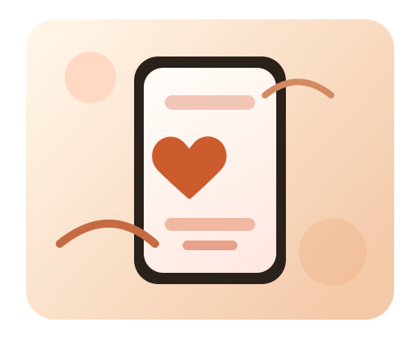

Build. Share. Explore.
Creative Corner is where your apps and ideas get their spotlight.
A welcoming home for projects, practical tools, and tutorials from CreativeNoobDuh, built to help people make something useful.
Featured
One place for the apps you build and the lessons behind them.
Creative Corner is designed to grow from a simple showcase into a polished portfolio for apps, experiments, and creator-friendly resources.
- Showcase apps with screenshots and descriptions
- Share useful tools and utilities
- Teach people how to build alongside you
Apps
Projects that deserve a front page
Give each app a clear summary, a strong visual, and a direct path to try it out.
Featured App
Valentines Reminder
An Expo mobile app for tracking birthdays, anniversaries, and important reminders so people never miss the moments that matter.
- Persistent event storage with AsyncStorage
- Recurring reminders for birthdays and anniversaries
- Built-in text idea templates and notification support
Portfolio Ready
Future Releases
Leave room for upcoming launches so the site keeps growing as you ship more apps and updates.
Shape the next showcaseProject Goals
Simple, Useful, Personal
Present apps with plain-language summaries so visitors quickly understand the value of what you are building.
Keep browsing
Featured Build
Valentines Reminder helps people stay thoughtful before important dates sneak up.
This first highlighted project sets the tone for Creative Corner: practical apps with a friendly purpose. It focuses on planning ahead, remembering meaningful dates, and making follow-through easier with reminders and message ideas.
Expo
React Native
Notifications
AsyncStorage
Tools
Helpful utilities for everyday creators
Show off small tools, helpers, or experiments that solve a problem quickly and clearly.
Why tools matter
Sometimes the most useful thing you build is a focused utility. This section gives helpers, experiments, and micro-tools a polished place to live when you are ready to share them.
Quick Access
Link straight to downloads, demos, or GitHub repos without extra clutter.
Clear Value
Explain the problem each tool solves in one sentence so people get it instantly.
Organized Growth
Keep side projects tidy as your collection expands beyond your first app release.
Tutorials
Teach people what you learn as you build
Turn your process into helpful guides so visitors can learn from your wins, fixes, and experiments.
Build Walkthroughs
Explain how an app works, what stack you used, and which problems you solved along the way.
Release Notes
Share what changed in each version so visitors can follow your progress over time.
Beginner-Friendly Notes
Keep the tone approachable so your site feels useful to both new and experienced builders.
Quick Links
Make it easy for visitors to explore your work
About Us
A creative space for sharing what you make
Creative Corner is the home for projects, experiments, and lessons learned from CreativeNoobDuh. It is designed to feel warm, polished, and personal, so visitors immediately understand what you build and why it matters.
As you add real apps and tools, this layout can grow into a full portfolio site with project pages, screenshots, install links, and contact information.
What comes next
The next upgrades I would recommend are project screenshots, direct install or demo buttons, and a short personal intro about what kind of apps you want to become known for.